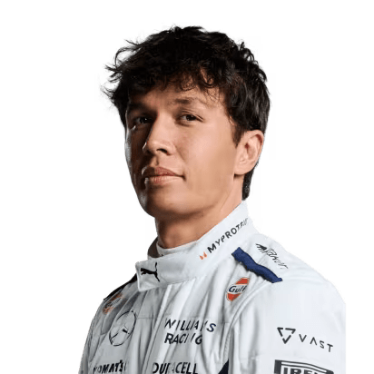
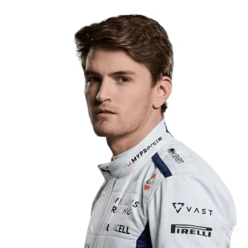
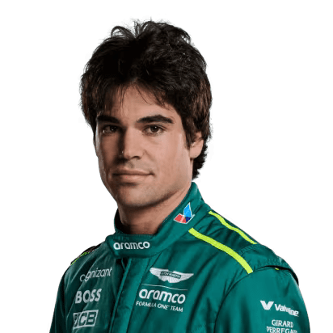
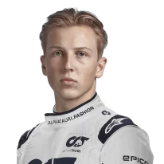

Mercedes
- Debut en Fórmula 1 (2007 - McLaren)
Primeras victorias y subcampeón en su año de debut.
Primer Campeonato Mundial (2008 - McLaren)
Se convierte en el campeón más joven en ese momento.
Cambio a Mercedes (2013)
-
Comienza una era dominante en la F1.
Campeonatos Mundiales con Mercedes
6 títulos: 2014, 2015, 2017, 2018, 2019, 2020.
Récords y Logros
Máximo ganador de poles, podios y victorias en la F1.
-
Debut en Fórmula 1 (2019 - Williams)
Muestra gran habilidad, aunque con un equipo menos competitivo.
Destacada Actuación como Suplente (2020 - Mercedes)
Suple a Lewis Hamilton en el GP de Sakhir, impresionando con su velocidad y control.
-
Ingreso a Mercedes como Piloto Oficial (2022):
Se une a Mercedes, logrando su primer podio y victoria en la F1.
Actualidad y Potencial
Compite junto a Lewis Hamilton, siendo un contendiente joven y prometedor en la parrilla.
Ferrari
-
Debut en Fórmula 1 (2018 - Sauber)
Demuestra su talento en su temporada de novato.
Ingreso a Ferrari (2019)
Se convierte en el piloto más joven de Ferrari en años y logra su primera victoria.
-
Temporada Destacada y Pole Positions (2019)
Logra múltiples poles y victorias en su primer año con Ferrari, consolidándose como una promesa.
Actualidad y Potencial
Sigue en Ferrari, buscando llevar al equipo de regreso a la cima de la F1.
-
Debut en Fórmula 1 (2015 - Toro Rosso)
Destaca como piloto sólido y consistente en varios equipos.
Ingreso a Ferrari (2021)
Se une a Ferrari, logrando podios y compitiendo regularmente por buenos resultados.
-
Primera Pole Position y Victoria (2022)
Logra su primera pole y victoria con Ferrari, demostrando su capacidad en carreras clave.
Actualidad y Consistencia
Compite junto a Leclerc en Ferrari, aportando experiencia y consistencia.
Red Bull
-
Debut en Fórmula 1 (2015 - Toro Rosso)
Sorprende como el piloto más joven en la historia de la F1.
Ingreso a Red Bull (2016)
Gana su primera carrera con Red Bull en su debut con el equipo.
-
Dominio y Títulos Mundiales (2021, 2022)
Se convierte en campeón del mundo y continúa dominando en la F1.
Actualidad y Récords
Sigue en Red Bull, batiendo récords y manteniendo una posición dominante.
-
Debut en Fórmula 1 (2011 - Sauber)
Muestra gran consistencia y habilidad para cuidar los neumáticos.
Ingreso a Red Bull (2021)
Se une a Red Bull como segundo piloto, logrando victorias y podios clave.
-
Temporadas de Consistencia y Apoyo (2021, 2022)
Apoya a Verstappen y consigue resultados sólidos para el equipo.
Actualidad y Consistencia
Compite junto a Verstappen, aportando experiencia y consistencia en Red Bull.
McLaren
-
Debut en Fórmula 1 (2019 - McLaren)
Lando Norris se destaca como una joven promesa de la F1.
Primer podio con McLaren (2020)
Se convierte en una de las figuras clave para el equipo.
-
Temporadas de Consistencia y Progresos (2021, 2022)
Lando sigue mostrando su talento, consiguiendo podios y afianzando su lugar en McLaren.
Actualidad y Potencial
Sigue compitiendo con McLaren, buscando regresar a la lucha por victorias.
-
Debut en Fórmula 1 (2023 - McLaren)
Oscar Piastri impresiona como un talentoso novato con McLaren.
Ingreso y Primeros Resultados (2023)
Se une a McLaren, logrando buenos resultados en su temporada de debut.
-
Desarrollo y Consistencia (2023, 2024)
Continúa demostrando su capacidad para evolucionar y adaptarse a la F1.
Actualidad y Progreso
Con McLaren, Piastri sigue creciendo y buscando alcanzar podios y victorias.
Alpine
-
Debut en Fórmula 1 (2016 - Manor)
Esteban Ocon llega a la F1 mostrando gran consistencia.
Ingreso a Renault (2019), posteriormente Alpine
Se convierte en un pilar importante del equipo.
-
Temporada Destacada (2021)
Ocon logra su primera victoria en la F1 en Hungría, consolidándose como una figura clave en Alpine.
Actualidad
Esteban sigue con Alpine buscando seguir sumando éxitos.
-
Debut en Fórmula 1 (2017 - Toro Rosso)
Pierre Gasly demuestra su talento con un rendimiento destacado en la F1.
Ingreso a Alpine (2023)
Se une a Alpine, buscando nuevos retos y victorias.
-
Primeros Logros en Alpine (2023)
Gasly logra buenos resultados, mostrándose competitivo con su nuevo equipo.
Actualidad
Con Alpine, Gasly sigue buscando mejorar y desafiar a los mejores pilotos de la F1.
Williams
-
Debut en Fórmula 1 (2019 - Toro Rosso)
Alexander Albon muestra gran habilidad desde su inicio en la F1.
Ingreso a Williams (2022)
Se convierte en una pieza clave para el equipo.
-
Desarrollo y Mejoras (2022-2024)
Albon ayuda a Williams a mejorar su rendimiento y sigue buscando puntos y buenos resultados.
Actualidad
Continúa en Williams, con grandes expectativas de crecimiento.
-
Debut en Fórmula 1 (2023 - Williams)
Logan Sargeant es el primer estadounidense en la F1 con Williams.
Ingreso y Primeros Resultados (2023)
A pesar de ser novato, Sargeant muestra buen desempeño en su temporada de debut.
-
Aprendizaje y Crecimiento (2024)
Sargeant sigue en Williams buscando mejorar y conseguir mejores resultados.
Actualidad
Se enfoca en aprender y adaptarse a la F1 para alcanzar su máximo potencial.


Haas
-
Debut en Fórmula 1 (2016 - Haas)
Kevin Magnussen llega a Haas mostrando gran consistencia y habilidad.
Temporada destacada (2017)
Magnussen logra sus primeros puntos y se convierte en pieza clave de Haas.
-
Consistencia y resultados en Haas (2020-2024)
Magnussen continúa demostrando su valía, logrando puntos en varias temporadas.
Actualidad
Sigue compitiendo con Haas, con la meta de mejorar el rendimiento del equipo.
-
Debut en Fórmula 1 (2010 - Williams)
Nico Hülkenberg inicia su carrera en F1 con Williams, destacando rápidamente por su velocidad y consistencia.
Pole Position en Brasil (2010)
En su temporada de debut, Hülkenberg logra una pole position en el Gran Premio de Brasil, mostrando su potencial.
-
Años en Equipos de Media Tabla (2011-2019)
Compite en varios equipos como Force India, Sauber y Renault, consolidándose como un piloto confiable y veloz.
Experiencia y Consistencia
A pesar de no conseguir podios, Nico se mantiene como uno de los pilotos más consistentes en la parrilla.
-
Regreso a la F1 con Haas (2023)
Después de algunos años fuera, Hülkenberg vuelve a tiempo completo con Haas, aportando experiencia al equipo.
Actualidad
Nico sigue compitiendo con Haas, buscando ayudar al equipo a sumar puntos y mejorar en el campeonato.


Aston Martin
-
Debut en Fórmula 1 (2001 - Minardi)
Fernando Alonso comienza su carrera en la F1, mostrando un talento excepcional.
Primer Campeonato Mundial (2005, 2006 - Renault)
Se consagra campeón mundial en 2005 y 2006, logrando grandes victorias.
-
Regreso a la F1 (2021) y Éxitos en Aston Martin
Alonso regresa con Aston Martin, demostrando su calidad y buscando victorias.
Actualidad
Continúa luchando por podios y victorias con Aston Martin.
-
Debut en Fórmula 1 (2017 - Williams)
Lance Stroll se une a la F1, mostrando promesas de futuro.
Ingreso a Aston Martin (2019)
Se une a Aston Martin, buscando mejorar sus resultados y lograr su primer podio.
-
Mejoras y Crecimiento (2020-2024)
Stroll sigue con Aston Martin, mostrando una mejora consistente y buscando podios.
Actualidad
Compite junto a Alonso para mejorar el rendimiento de Aston Martin.

Visa Cash App (RB)
-
Debut en Fórmula 1 (2021 - AlphaTauri)
Llega a la F1 como el primer piloto japonés en la parrilla en varios años, demostrando habilidad y velocidad en su temporada de debut.
Primera Temporada y Adaptación (2021)
Tsunoda enfrenta una curva de aprendizaje, logrando puntos en su primera carrera y mejorando a lo largo de la temporada.
-
Progreso y Consistencia (2022-2023)
Tsunoda continúa su desarrollo con AlphaTauri, ganando experiencia y mejorando su consistencia.
Actualidad y Metas Futuras
Compite con AlphaTauri, buscando consolidarse como un piloto fiable y apuntando a mejores resultados en la F1.
-
Primeras Experiencias en la F1 (2023 - AlphaTauri)
Liam Lawson es llamado como piloto de reemplazo, aprovechando la oportunidad para demostrar su habilidad en las pocas carreras que corre.
Debut Sólido y Promesa de Futuro (2023)
Aunque sin experiencia previa en F1, Lawson impresiona con actuaciones destacadas en su debut.
-
Posible Futuro en la F1
Lawson busca asegurar un asiento permanente en la F1, demostrando potencial para competir a tiempo completo.
Actualidad
Continúa ligado al programa de Red Bull, a la espera de más oportunidades para mostrar su talento.


Nuestras paginas relacionadas
Circuitos
Monoplazas
Pilotos
Escuderias
Tragedias
Historia
CEO
Campeones mundiales